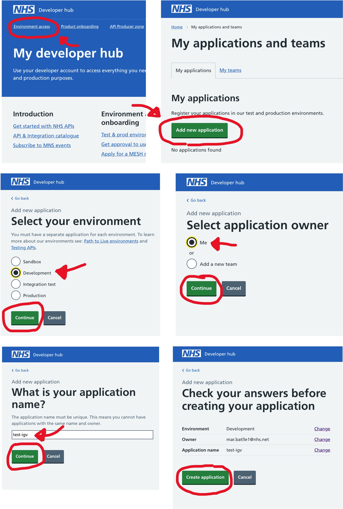
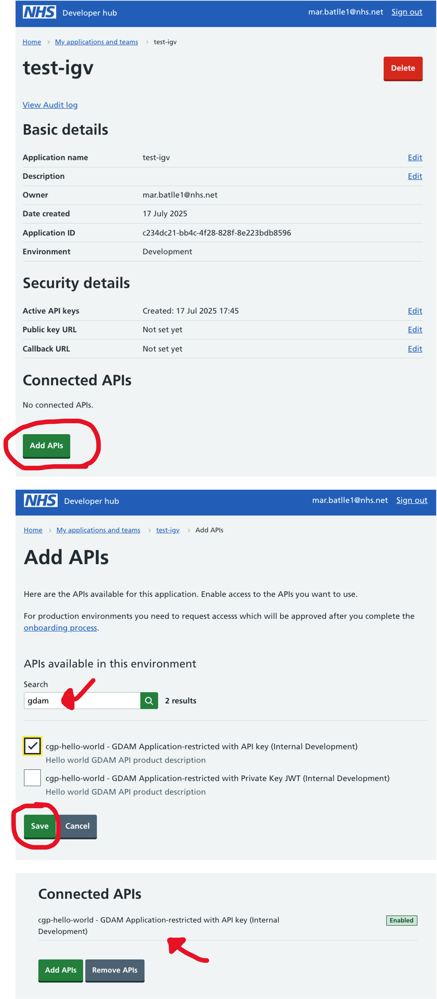
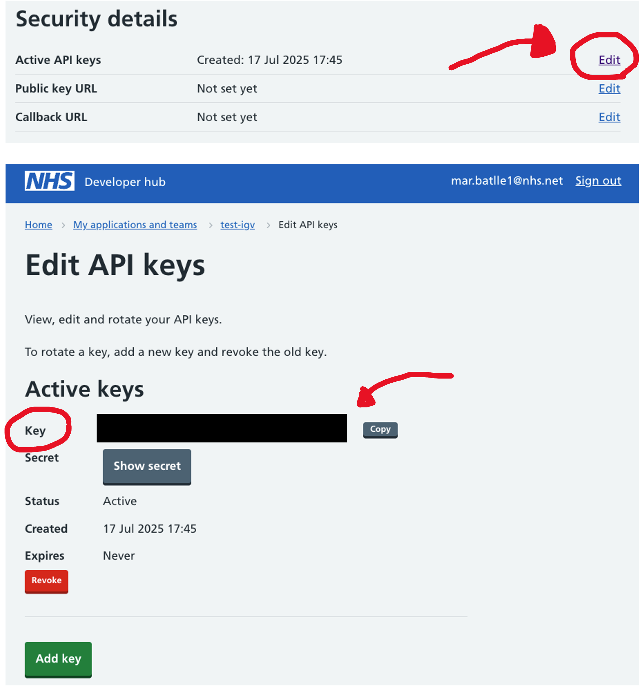

Visualising Genomic Data with IGV Workshop¶
About This Workshop¶
This workshop teaches you how to use the CGPClient library to stream Whole Genome Sequencing (WGS) genomic data files from the Genomics Medicine Service (GMS) through the HTSGET protocol and visualize them with IGV.
Learning Objectives
By the end of this workshop, you will be able to:
- Set up authentication with the NHS API Platform (APIM)
- Use the CGPClient library to discover and access genomic data files
- Stream WGS genomic data (BAM, CRAM, VCF) via HTSGET protocol
- Integrate genomic data with IGV for visualization
Key Technologies
- HTSGET: A protocol for fast, indexed access to genomic data over HTTP. Instead of downloading entire files, it streams only specific genomic regions, dramatically reducing bandwidth and improving performance.
- IGV (Integrative Genomics Viewer): The web-based version of the widely-used Integrative Genomics Viewer, enabling Clinical Scientists to quality check variants, examine read alignments, and make informed clinical decisions directly in the browser.
Environment Setup¶
1. Clone and Set Up CGPClient¶
Clone the repository and navigate to the project directory:
git clone https://github.com/NHS-NGS/cgpclient
cd cgpclient
Create and activate a Python environment (using conda):
# Create and activate environment
conda create --name=cgpclient python=3.13
conda activate cgpclient
Environment Management
The environment only needs to be set up once and can be reused across multiple workshop sessions.
2. Install Dependencies¶
Install Poetry for dependency management:
pip install poetry
Install the client library and dependencies:
poetry install
3. Verify Installation¶
Test that everything is installed correctly:
python -c "import cgpclient; print('CGPClient installed successfully')"
If you encounter errors, ensure you're in the correct conda environment and that all dependencies were installed properly.
Authentication Setup¶
The NHS API Platform uses JWT (JSON Web Token) authentication with API keys. You'll need to register your application and obtain three key pieces of information: API Key, Private Key PEM, and APIM KID.
Authentication Reference
For detailed authentication methods and troubleshooting, see the Authentication Guide
Step 1: Register in the NHS API Platform¶
- Navigate to the NHS Developer Hub: https://dos-internal.ptl.api.platform.nhs.uk/
- Log in with your NHS.net email address or create an account
Step 2: Create Your Application¶
- Go to Environment access → My applications and teams
- Click Add new application
- Fill in your application details:
- Environment: Select 'Development' (for this workshop)
- Owner: Select 'Me'
- Name: Choose a descriptive name (e.g., "test-igv-workshop")
- Click Create Application

Step 3: Connect the GDAM API¶
- In your application dashboard, find the Connected APIs section
- Click Add APIs
- Search for "GDAM API" and select the version that explicitly mentions API key authentication
- Click Add to connect the API to your application
You should now see the linked API in your application dashboard.

Step 4: Generate Your API Key and Private Key¶
Get Your API Key (KID)¶
- In your application dashboard, select Active API keys
- Copy your Key - this is your KID (Key Identifier)

Generate Your Private Key¶
Use the CGPClient script to generate the required keys:
cgpclient/scripts/create_apim_keys.sh -k YOUR_API_KEY -d ~/.cgpclient/test-1.pem
Replace YOUR_API_KEY with the key you copied from the NHS Developer Hub.
Expected output:
Output directory '{private_key_pem}' does not exist. Creating it...
Generating RSA private key, 4096 bit long modulus (2 primes)
...
Key pair and JWKS JSON created successfully for KID: {YOUR_API_KEY} in directory: ~/.cgpclient/
Step 5: Configure CGPClient¶
Create the configuration directory and file:
mkdir -p ~/.cgpclient
nano ~/.cgpclient/config.yaml
Add the following configuration (replace the placeholder values):
api_host: internal-dev.api.service.nhs.uk
api_name: genomic-data-access
api_key: YOUR_API_KEY_HERE # API key from the NHS Developer Hub
private_key_pem: /absolute/path/to/test-1.pem # Path to your private key
apim_kid: test-1 # Key ID (KID) associated with the key pair
output_dir: /tmp/output # Directory for output files
pretty_print: true # Format output for readability
Discovering Available Genomic Files¶
Understanding the List Files Command¶
The list_files script queries the Genomic Data Access and Management (GDAM) API to securely obtain file information through the DocumentReference endpoint.
Basic File Discovery¶
List all files for a specific referral:
cgpclient/scripts/list_files --referral_id r30000000001
Configuration File
This command uses your default configuration file at ~/.cgpclient/config.yaml. If you used a different location, specify it with: -cfg CONFIG_FILE or --config_file CONFIG_FILE
Filtering for Specific Files¶
To retrieve specific file types (e.g., CRAM files for a proband), use filtering options:
cgpclient/scripts/list_files \
--referral_id r30000000001 \
--participant_id p12345678301 \
--mime_type application/cram \
--include_drs_access_urls \
--pivot
Command breakdown:
--referral_id: Filters to a specific referral (family/case)--participant_id: Filters to a specific participant within the referral--mime_type: Filters by file type (application/cram, application/vcf, etc.)--include_drs_access_urls: Includes HTSGET URLs for streaming--pivot: Formats output for easier reading
Understanding the Output¶
The script returns detailed information about each genomic file:
file property value
last_updated 2025-07-07T14:03:28
ngis_category CRAM
content_type application/cram
size [file_size]
author_ods_code 8J834
referral_id r30000000001
participant_id p12345678301
sample_id LP1000000-DNA_B05
run_id [run_identifier]
name LP1000000-DNA_B05.cram
s3_url s3://mr459-dev-cgp-objects/2025/07/07/XXXXXX-XXXX-XXXX-XXXXX-XXXXXX/LP1000000-DNA_B05.cram
htsget_url https://sandbox.api.service.nhs.uk/genomic-data-access/ga4gh/htsget/v1.3/reads/XXXXXX-XXXX-XXXX-XXXXX-XXXXXX
Key fields:
name: The original filenames3_url: Direct S3 location (for reference)htsget_url: The streaming URL we'll use with IGVmime_type: File format (CRAM, VCF, etc.)size: File size in bytes
Streaming Data to IGV.js¶
With the HTSGET URL obtained from the file discovery step, you can now stream genomic data directly to IGV.js for visualization.
Download the following IGV.js HTML snippet (right click "save as")
Warning
There is a known issue with CORS which means HTSget urls routed via the NHS API platform will not work.
We are working with the NHS API platform to find a solution to this
Open the HTML in a text editor and modify the tracks
var options = {
supportQueryParameters: true,
genome: "hg38",
locus: "chr7:42395147-42395347", # specify the region you want to stream here
tracks: [
{
name: 'Reads', # name your track
type: 'alignment',
format: 'bam',
url: 'https://sandbox.api.service.nhs.uk/genomic-data-access/ga4gh/htsget/v1.3/reads/XXXXXX-XXXX-XXXX-XXXXX-XXXXXX', # insert htsget url from the list files output here
sourceType: 'htsget',
visibilityWindow: 10000,
}]
}
You can repeat for more CRAMs and other files held in GDAM such as VCFs and BigWigs as per the IGV.js documentation.